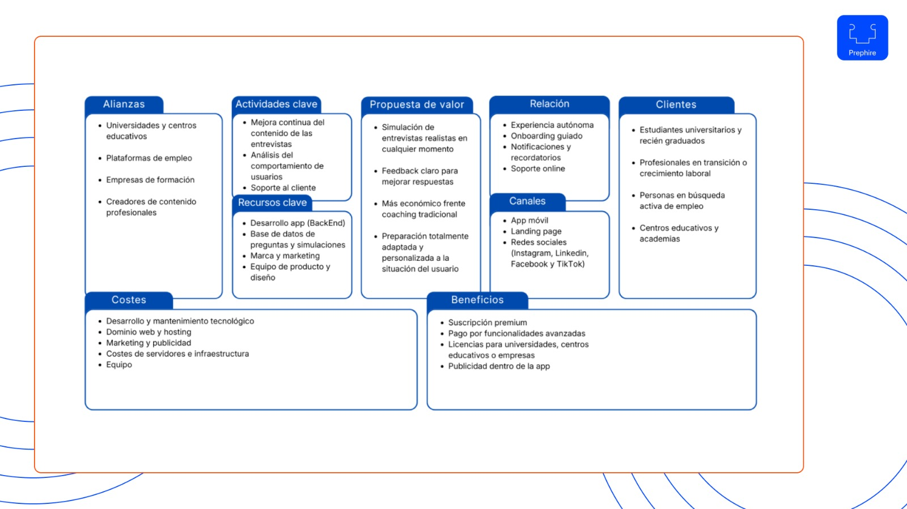
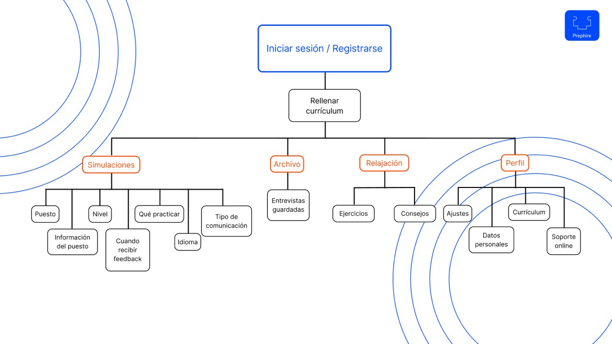
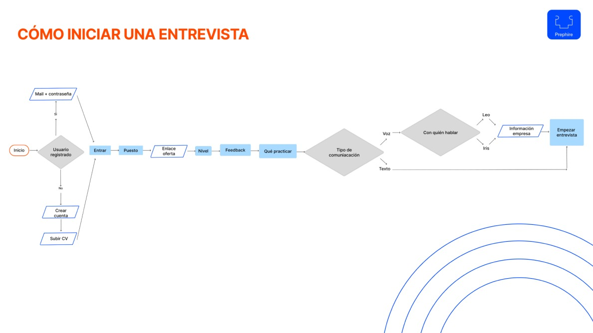
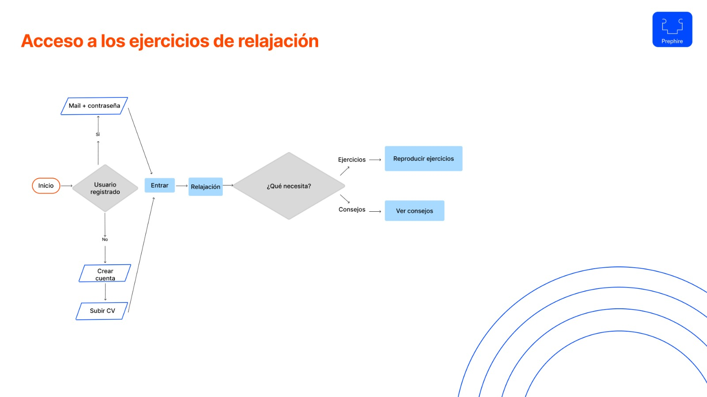
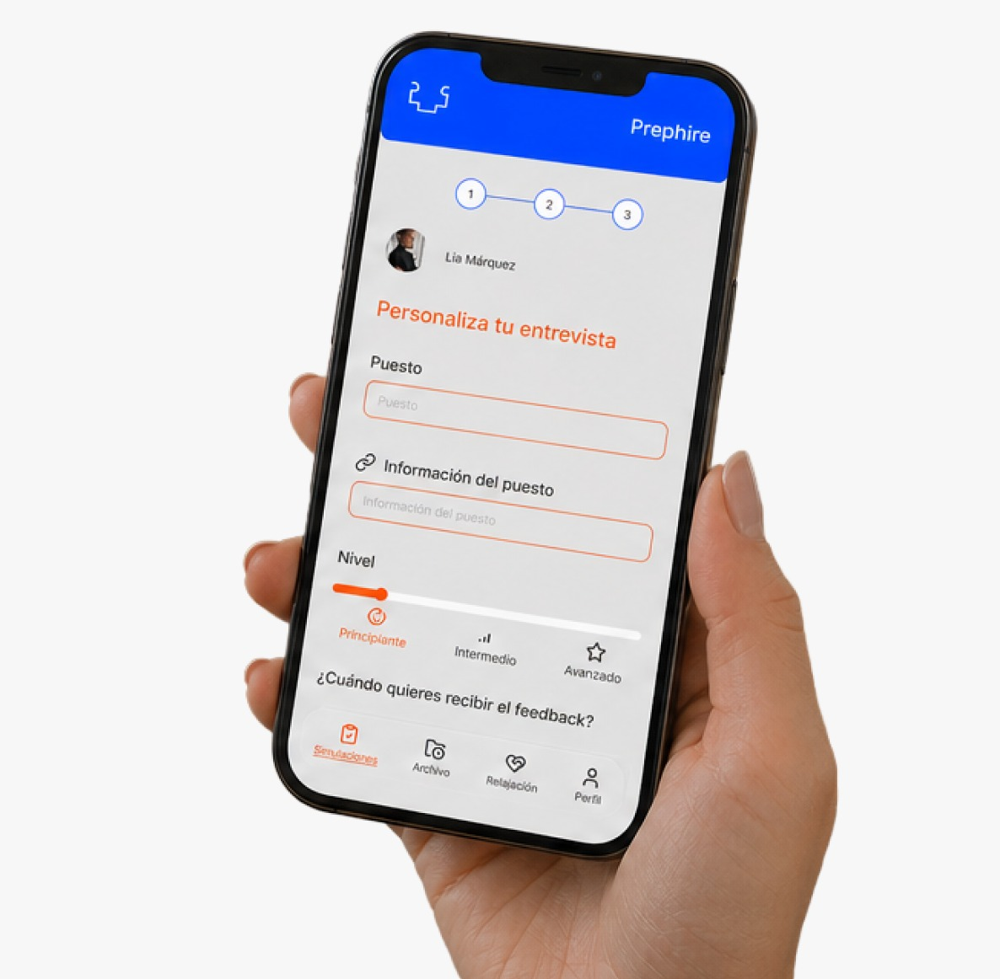

PREPHIRE · ARRASA EN TUS ENTREVISTAS
Proyecto final de máster - SobresalienteDiseñé desde cero una aplicación de práctica de entrevistas con el objetivo de ayudar a las personas a prepararse con confianza. El diseño se centró en crear una interfaz intuitiva y totalmente personalizable, adaptada a las necesidades reales de cada usuario. Para llevar a cabo el proyecto utilicé la metodología del Design Thinking, que me permitió centrar cada decisión de diseño en el usuario: entender sus necesidades, definir el problema real, idear soluciones, prototipar e iterar hasta llegar a una interfaz final sólida y validada.

¿Quién va a usar esta app y qué problema real tiene?
La investigación fue la base de todo. Sin entender a quién me dirigía y desde dónde partía, cualquier decisión de diseño habría sido una suposición. A través de ella identifiqué los problemas principales del usuario: la falta de práctica real, la ausencia de feedback útil y personalizado, y el miedo a quedarse en blanco. Tres insights que definieron la dirección del proyecto de principio a fin.
Con los insights de la investigación claros, el reto fue traducirlos en soluciones concretas. Reformulé los problemas como oportunidades de diseño y prioricé las funcionalidades clave de la app. Esto me permitió definir una arquitectura de información sólida y unos flujos de usuario coherentes con las necesidades reales identificadas.

Research - Empatizar
Investigué qué problemas encontraban los reclutadores en los candidatos actualmente y cómo se preparan los candidatos. Analicé soluciones existentes, conversaciones de usuarios en comunidades online y posteriormente contrasté estas hipotesis mediante cuestionarios y entrevistas.
Findings importantes
-
Necesidad de orientación para entrevistas
-
Falta de recursos en herramientas actuales
-
Falta de adaptación a sus necesidades en herramientas actuales
-
Los usuarios necesitan aprender a controlar sus nervios previos


Definición
A partir de los insights obtenidos en la fase de empatizar, definí el user persona. Este perfil me ayudó a conocer y comprender mejor a los usuarios, a identificar sus necesidades y detectar oportunidades para diseñar la solución que ofrecería Prephire a lo que necesitan.

Ideación
Una vez finalizada la fase de empatizar y conocer las necesidades de los usuarios, definí los findings e insights detectados hasta el momento. Gracias a ello pude acabar definiendo las funcionalidades principales que acabaría teniendo la aplicación, asgurando que respondiesen a las necesidades de los usuarios.
Propuesta de valor - Funcionalidades
-
Permitir entrar información de la empresa para una experiencia totalmente personalizada y una información bien estructurada.
-
Elegir tipo de entrevista según el objetivo con el que se practica.
-
Poder elegir entre practicar con un agente por voz para mayor realismo o por escrito.
-
Apartado en la app exclusivamente dedicado a ayudar al usuario con el control de nervios.






Sitemap + Flowcharts
Cómo último paso previo a iniciar con la solución final, diseñé el sitemap de la aplicación con el objetivo de obtener una correcta estructura de la información dentro de la app. También realicé 2 flowcharts de funcionalidades que puede utilizar el usuario.
Diseño final
Una app que cambiará la forma de preparar entrevistas.


WIREFRAMING
Antes de iniciar con el diseño visual, desarrollé los wireframes para poder validar la estructura y los flujos de la app. Definí la jerarquía de contenido, la navegación principal y la disposición de los elementos clave en cada pantalla. Este paso me ayudó a poder llegar al diseño visual con una base sólida y validada.
IDENTIDAD
El icono que forma parte del logotipo representa de forma abstracta a dos personas frente a frente, simbolizando lo que es una entrevista. A su vez, forma una pieza de puzzle a la que le falta la parte superior, lo que sugiere que falta una parte esencial: la conexión entre quien contrata y la persona entrevistada. Esto ayuda a reflejar el objetivo de la marca, que es poder conseguir esa conexión con nosotros.
El nombre Prephire, que forma parte del logotipo, surge de la fusión de dos verbos en inglés: Prepare (preparar) y hire (contratar). Esta combinación refleja la esencia de la marca: acompañar a los usuarios en el proceso de preparación para que puedan alcanzar su objetivo final, ser contratados.
UI KIT
En el UI Kit se han diseñado los componentes esenciales del diseño siguiendo una lógica clara y reutilizable, para así crear una base sólida y coherente para toda la interfaz, con el objetivo de garantizar consistencia visual y facilitar el desarrollo de la aplicación.
Además, se han establecido jerarquías visuales y estados (activo, inactivo, hover) para asegurar una experiencia uniforme en todas las pantallas. Esto no solo mejroa la usabilidad, sino también permite escalar el diseño de forma ágil, manteniendo siempre una identidad visual clara, moderna y profesional.

PREPHIRE · RESULTADO FINAL
El proceso de investigación y diseño derivó en una aplicación atractiva, intuitiva y accesible, que responde directamente a las necesidades reales de los usuarios.